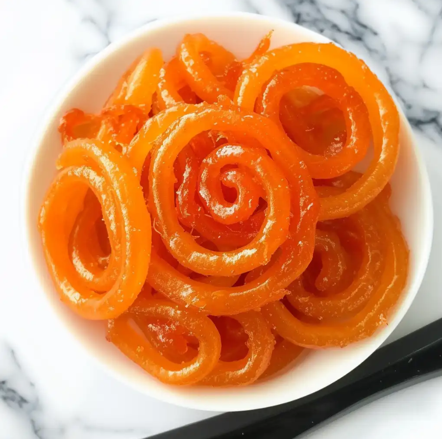

Jalebi Recipe

Ingredients
- 1 cup all-purpose flour (maida)
- 2 tablespoons cornflour
- ½ cup yogurt (curd)
- ¼ teaspoon baking soda
- Water as needed
- Oil or ghee for frying
Steps
- Take all-purpose flour and cornflour in a large mixing bowl.
- Add curd and baking soda.
- Add water slowly and mix until you get a smooth, thick batter
- Add orange food colour and mix well.
- 1. Cover the batter and let it ferment for 6–8 hours.
- Add sugar and water to a pan.
- Heat until the sugar dissolves.Add cardamom powder and lemon juice.
- 6. Cook until the syrup becomes slightly sticky.
- Heat oil or ghee in a frying pan. Pour the batter into a squeeze bottle.
- Remove the jalebis from the oil.Dip them in warm sugar syrup for 20–30 seconds.Remove and serve warm.
Home